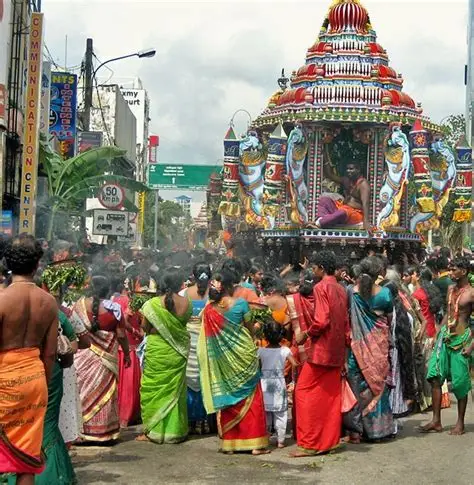
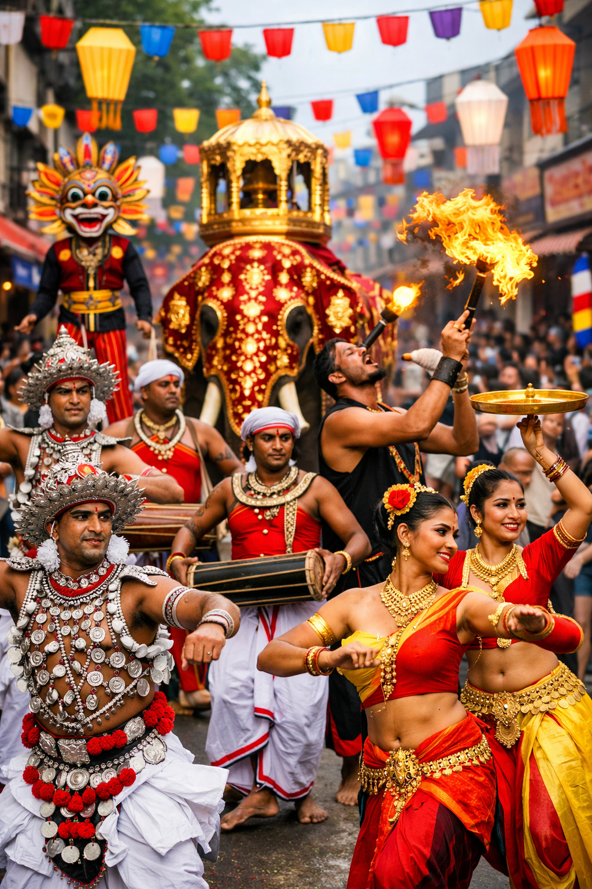
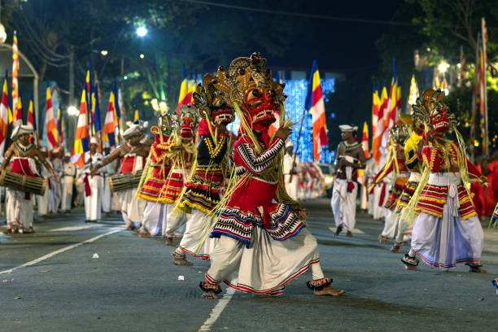
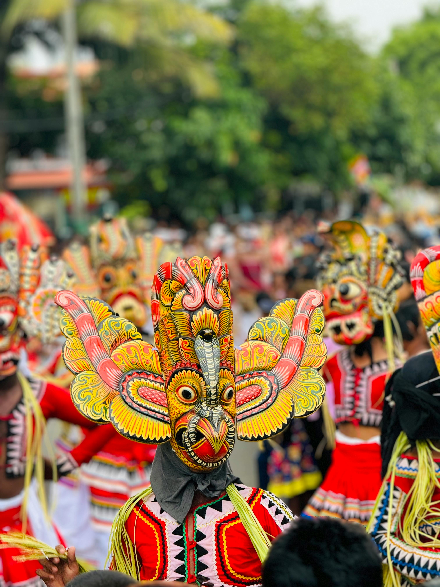

Sri Lanka’s street festivals are a dazzling reflection of its rich cultural heritage, blending religion, art, dance, and community into unforgettable celebrations. From the bustling streets of Colombo to the historic city of Kandy, these festivals bring people together in joy and devotion. Hindu Street Festival - Colombo | Sri lanka travel, Sri lanka, Colombo L'Incredibile Esala Perahera del Tempio del Dente di Kandy Premium Photo | Nighttime Vesak Lantern Procession in Sri Lanka 🌸 Major Street Festivals Sinhala and Tamil New Year Celebrated in mid-April, this festival marks the end of the harvest season. Streets fill with games, music, and traditional food stalls. Villagers compete in fun contests like pillow fights and tug-of-war, while families share sweets and laughter. Vesak Festival In May, cities glow with lanterns and colorful decorations to honor the birth, enlightenment, and passing of the Buddha. Streets are lined with pandals (illuminated displays) and free food stalls called dansalas. Esala Perahera Held in July–August in Kandy, this grand procession features elephants adorned in gold and lights, Kandyan dancers, drummers, and fire performers. It’s one of Asia’s oldest and most spectacular religious parades. Temple Festivals Across villages, smaller temple processions showcase local traditions — with music, dance, and offerings to deities. These events strengthen community bonds and preserve ancient customs. 🎶 Highlights of Street Celebrations Feature Description Decorated Elephants Symbol of majesty and devotion, often carrying sacred relics. Kandyan Dance Traditional rhythmic movements with drums and vibrant costumes. Fire Performers Skilled artists who light up the night sky with fiery displays. Lanterns and Pandals Stunning street decorations during Vesak. Community Games Fun competitions that unite people of all ages. 🌺 Final Thoughts Sri Lanka’s street festivals are not just events — they are living expressions of faith, joy, and unity. Whether you witness the glowing lanterns of Vesak or the majestic elephants of Esala Perahera, each celebration tells a story of a nation proud of its traditions and people.
Explore scenes from Sri Lanka’s different cultural celebrations.



